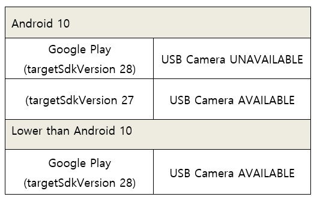

All Google Play app upgrades must now target sdk 28 or higher as of November 2019. source:https://android-developers.googleblog.com/2019/02/expanding-target-api-level-requirements.html Endoscope Camera Pro should therefore be SDK level 28 or higher in order to be updated to Google Play. In the app from the Play Store, Android 10 smartphones CANNOT connect USB cameras such as webcams. Users of Android 10 devices who want to broadcast live with webcams, endoscope cameras, microscopes,and other devices can dowload the Endoscope Camera Pro app with target SDK Level 27 from the button below or above.
dowload So far, we haven't been able to locate any official Google OS documents related to these policy changes. We're looking into various options for resolving the problem and will keep you updated if anything changes. Thank you very much. from the crew of Endoscope Camera Pro